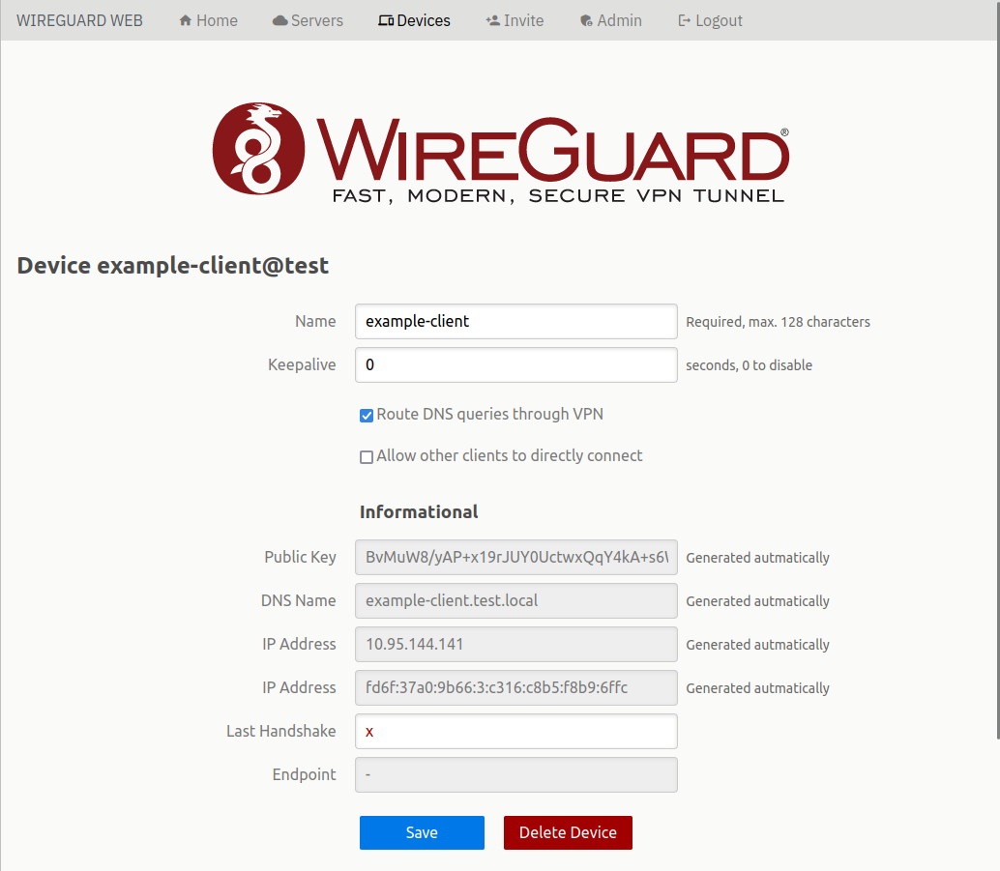
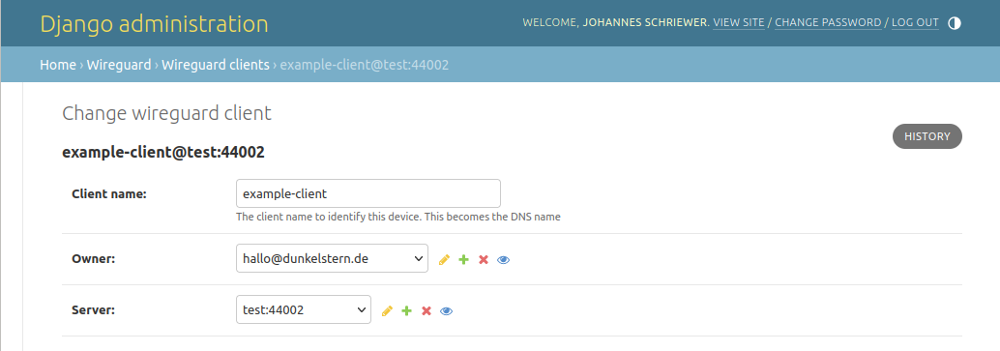
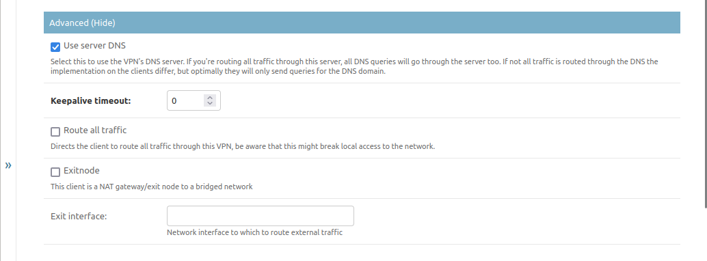
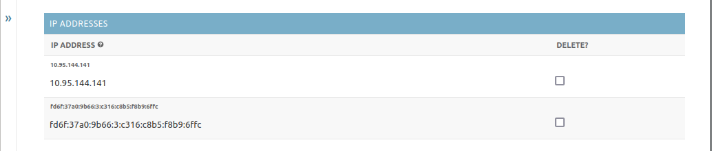
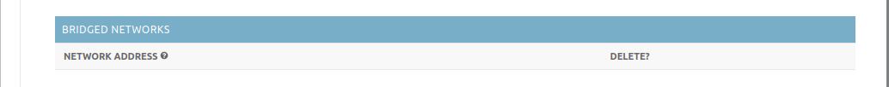
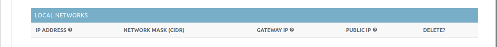

Client configuration
Introduction
Setting up clients may be done from the Web UI as normal Users would do, or alternatively through the Django administration backend.
Client configuration looks like this on the Web UI, but to describe the settings we’re using the Django UI.
{kind=link}
Basics
{kind=link}
Basic settings for a client are rather simple. You basically need a Name which will be used for UI and DNS purposes (name will be automatically simplified for DNS usage), an owner and a server/endpoint to which to connect the client to.
Advanced
{kind=link}
The advanced settings are all visible at all times on the Django backend but will be visible to the users on the UI only if the server has the corresponding feature enabled.
Using VPN DNS services
Enable Use server DNS to create a configuration file that sets a DNS server.
It depends on the operating system and the configuration method on when that server is actually contacted. In worst case all DNS queries will go through the VPNs DNS server which will cascade queries it can not answer to the server’s DNS, so make sure the server’s DNS is able to answer DNS queries for the Internet.
Keepalive Timeouts
Set the Keepalive Timeout when you have to be able to connect to this client from other clients at all times. If the client is behind a NAT it is possible that the router doing the NAT has a connection tracking timeout. If no data is sent in that timeout the automatic port forwarding will be closed down and you will not be able to connect to the client from anywhere. Usually the lowest timeout a router has configured is about 30 seconds, so set this to 25 seconds if you have problems reaching the client after it has been idle for some time.
Be aware that this will keep the client from going into any power saving modes, so best use this only for clients that do not run on batteries.
Routing all traffic
Enable Route all traffic if you want the client to send all network traffic through this VPN endpoint. Be aware that this might break local network communication, as well as DNS when no further configuration is done on the client and VPN DNS is disabled.
Exitnodes
This is basically the same setting as on the server side. On the Web UI this setting will only be displayed to Staff or Admin users, as well as the Bridged Networks-Setting below.
If you want to allow clients to access other networks over this client you might want to enable Exitnode functionality. This is used by the bridging feature of the VPN. This will enable NAT on the client for it to be able to bridge incoming traffic through it’s own network.
If you enable the Exitnode function, you must tell the client to which network interface to route packets that cannot be routed locally. It is possible to “stack” networks this way, but be aware what you’re doing.
IP Addresses
{kind=link}
This only displays the IP addresses the service set for your clients automatically, based on the endpoint configuration. If you want to you can delete single addresses (for example if the client can not handle IPv6). If you remove all addresses here and save the client, the service will re-generate the assigned IPs automatically.
Bridged Networks
{kind=link}
This is only enabled when the server allows client bridges. When it does allow bridges this works the same as the server variant. This has to be a network address for the other clients, they will get routes to that network.
Be aware that other clients need to re-download their configuration when something is changed here!
Local Networks
{kind=link}
This displays local network information if the client is using the peering client for local peer2peer autoconfiguration.